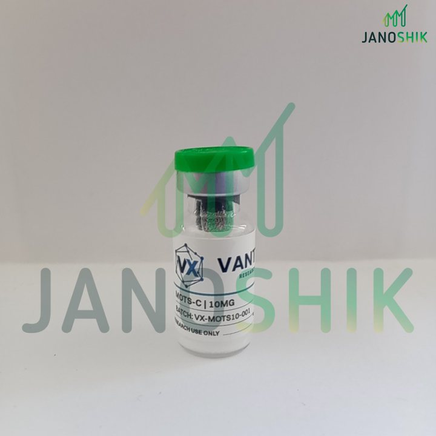

The short answer
This is a real third-party report for a Vantix Bio MOTS-c 10 mg batch (VX-MOTS10-001), tested by Janoshik in May 2026. It reports 99.402% purity and a quantity of 10.55 mg. Both numbers come from one HPLC run, and both can be checked against the raw data page, which is why that page matters more than the summary.
A certificate is a summary of a measurement. To judge it, you need to know what each field means and which numbers can be checked against the data behind them. Below, the report is annotated field by field. The numbered markers on each image match the numbered lists beneath it. Tap an image to open it full size.
Page 1: The Test Report
- Task number and dates. #165874 is the lab's record number. Testing was ordered 19 May 2026, the sample arrived 25 May, and analysis was conducted 29 May. A report that predates the sample's arrival, or has no dates, deserves questions.
- Client, sample and batch. The client is Vantix Bio, the sample is "MOTS-c 10mg" and the batch is VX-MOTS10-001. The batch number is the link between this paper and a physical vial, so it should match the label you hold.
- Manufacturer: Undisclosed. This field is filled in from what the client tells the lab. "Undisclosed" means the lab did not record who made the material, so the report speaks only to the sample it received.
- Tests requested. "MOTS-c analysis" is the whole order. That is why the results table has two lines and no others. Anything not requested does not appear.
- Results. Quantity (10.55 mg) and purity (99.402%). The third row is empty. Both values appear again on the raw data page, where you can check them.
- QR code. It opens the lab's own record of this task. Scanning it, rather than trusting the PDF in front of you, is the point.
- Verification key. SSELJFCHMJCC, entered at janoshik.com/verify, returns the lab's copy of the report. If the key returns nothing or different values, do not rely on the document.
The Sample Photo
The "Sample description" field on page 1 reads "See picture or pictures attached". The next page of the report carries the photograph below. It ties the report to a physical object: the vial the lab received, with the product name, the batch number and the research-use-only statement visible on its label.

Page 2: The Raw Data
The second document is the instrument's own output. This is the page that lets you check the summary. It comes from Shimadzu LabSolutions software, which is a common chromatography data system.
- Sample information. Date acquired 29.05.2026, 0.5 µL injected. This should agree with "analysis conducted" on page 1. It does. The sample name on this page is discussed below.
- Method file. The method filename points to an acetonitrile and water method. The page does not print the gradient, so you cannot judge the separation from this page alone.
- Detection wavelength. The chromatogram is a UV trace at 280 nm. That wavelength is absorbed by tryptophan and tyrosine, and the MOTS-c sequence contains both, so the peptide gives a strong signal here.
- The main peak. One tall, narrow peak at 3.286 minutes. This is the compound the lab labels MOTS-C in the peak table.
- The minor peaks. Two tiny peaks at 3.097 and 3.473 minutes, either side of the main peak. They are the only other signals above the baseline, and they are what the purity figure subtracts.
- Time axis. Retention time in minutes, 0 to 6. A peak that elutes at 3.3 minutes in a 6-minute window leaves limited room to separate closely related impurities.
- Peak table. Area for each peak, the area percentage, and, for the main peak, a concentration of 10.55 mg. This table is where the report's two headline numbers come from.
Check the Math
Area purity is the main peak's area divided by the total area of all peaks. You can reproduce it from the table with a calculator:
| Peak | Retention time (min) | Area | Share of total |
|---|---|---|---|
| 1 (minor) | 3.097 | 1,497 | 0.384% |
| 2 (MOTS-c) | 3.286 | 387,596 | 99.402% |
| 3 (minor) | 3.473 | 836 | 0.214% |
| Total | 389,929 | 100.000% |
387,596 ÷ 389,929 = 0.99402, which matches the reported 99.402%. The three areas add up to the stated total. That is a useful consistency check, and a report whose table does not add up should not be trusted.
What this number is not: it is the share of detected UV signal at one wavelength, not the share of the powder's weight. Purity percentages do not account for water, salts, endotoxins or heavy metals, and the graph itself is a visual aid, with the results calculated from peak areas [1]. HPLC can also miss impurities that elute together with the main peak or that do not absorb at the detection wavelength [2].
Why 10.55 mg on a 10 mg Vial?
The report gives a quantity of 10.55 mg for a vial labeled 10 mg, which is 105.5% of the label. A quantity above the label can look like an error. It is not, for three reasons.
- It is an estimate with uncertainty. The quantity comes from the same HPLC run as the purity. Quantitative HPLC works by comparing the sample's signal with a reference standard [3]. The result inherits the uncertainty of that comparison, and it can land a little above or a little below the true amount. The report does not say how the concentration was calibrated.
- Fill amounts vary. Lyophilized vials are never filled to exactly the label figure, so a small spread either side of the label is expected.
- It is a different measurement from net peptide content. Net peptide content is the percentage of the powder that is peptide, measured with methods such as amino acid analysis or elemental analysis [4]. This report does not measure it. A quantity above 100% of the label cannot be a net-content percentage of a 10 mg powder fill, so treat it as an HPLC quantity.
We found no published standard for how close a reported quantity should be to the label for research peptides, and we do not invent one here. What matters is that the number is traceable: it is on the lab's own record, it is reproducible from the raw data, and it comes from a lab that is not the seller. For the difference between purity, quantity and net content, see Net Peptide Content Explained.
The Sample Name Mismatch
This report has one detail that does not line up on the page. The raw data identifies the sample as "22009-4 MOTS-c 100mg, obyc. t. + endotoxin", while page 1 says "MOTS-c 10mg". The raw data also mentions endotoxin, but the results table has no endotoxin line.
The reported quantity of 10.55 mg is consistent with a 10 mg sample, not a 100 mg one, and the batch and task number match on both pages. That points to a shorthand in the lab's internal run sheet, not a different sample. But the page itself does not explain it, and this is exactly the kind of mismatch worth raising with the lab. Our fake-COA red flags include inconsistent sample details between pages. The difference here is that a lab-issued report with a matching task number, batch, quantity and a working verification key can be checked at the source, and a forged one cannot.
What This Report Does Not Show
A report only covers what was ordered. This one covers two things, and it is open about that in the "Tests requested" field. It does not show:
- Identity by mass spectrometry. HPLC answers how pure a sample is, and mass spectrometry answers what it is [2]. A retention time alone does not confirm the sequence.
- Endotoxin. There is no result line for it.
- Water and counter-ion content. These make up the gap between the powder's weight and the peptide's weight, as explained in our net content guide.
- Anything about other batches. A report describes one batch. The reason every batch needs its own is covered in Why a COA Isn't Enough.
None of this makes the report less useful. It makes it a specific, checkable statement about purity and quantity, and a reader can see exactly where its limits are.
Your Checklist
You can apply these steps to any COA, from any vendor:
- Match the batch number on the report to the label on your vial.
- Check that the dates make sense: ordered, received, analyzed.
- Look at who requested the tests and what was requested. Missing tests are not hidden, they are just absent.
- Verify the report at the lab's own site with the key or QR code, not from the PDF alone.
- Open the raw data page. Check that the peak areas add up and that the area share equals the reported purity.
- Compare sample names and amounts across every page, and ask the lab about anything that does not match.
- Ask whether identity, endotoxin and net content were tested, and by what method, if they matter for your work.
Vantix Bio batches carry the same kind of record. On the verification page, scan the QR code or enter a batch number to see the data, the PDF and a link to the original third-party lab report.
Frequently Asked Questions
What does 99.402% purity mean on this report?
It is the main peak's share of all detected peak area in the UV trace at 280 nm: 387,596 out of 389,929 area units. It is not a percentage of the vial's weight, and it says nothing about water, salts or endotoxin.
Why does the report say 10.55 mg when the vial is labeled 10 mg?
The quantity is an HPLC estimate, and estimates carry uncertainty, so a small deviation above or below the label is normal. It is also a different measurement from net peptide content. We found no published standard for how close it should be to the label.
Does this COA prove the vial contains MOTS-c?
Not by itself. HPLC shows one dominant peak and its purity. Confirming identity needs mass spectrometry, which was not part of this order.
What does "Manufacturer: Undisclosed" mean?
The lab records who made the material only if the client tells it. Undisclosed means the report speaks to the sample as received, and does not name a producer.
How can I tell this report is genuine?
Enter the verification key at janoshik.com/verify, or scan the QR code, and compare what the lab returns with the document. Then match the batch number to your vial and check that the raw data adds up.
Why is the sample name on the raw data page different?
The raw data names a 100 mg sample, while the report names 10 mg. The quantity, batch and task number agree with the 10 mg product, which suggests an internal shorthand, but the page does not explain it. Ask the lab if a mismatch like this matters for your decision.
References
- Finnrick. How to read a Certificate of Analysis (COA). finnrick.com
- PeptideJournal. Understanding peptide purity: HPLC & mass spec. peptidejournal.org
- BioPharm International. Control strategies for synthetic therapeutic peptide APIs, part I: analytical considerations. biopharminternational.com
- Bio-Synthesis. Peptide purity, peptide content and absolute amount of desired peptide. biosyn.com